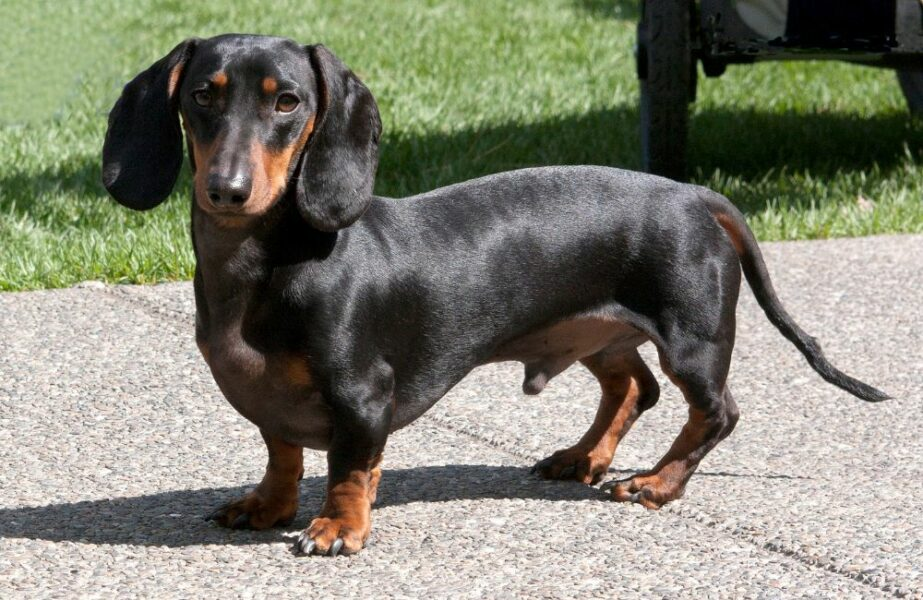
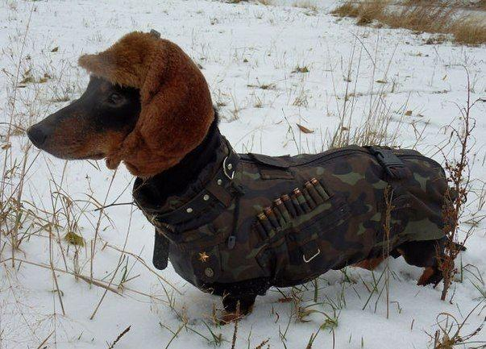
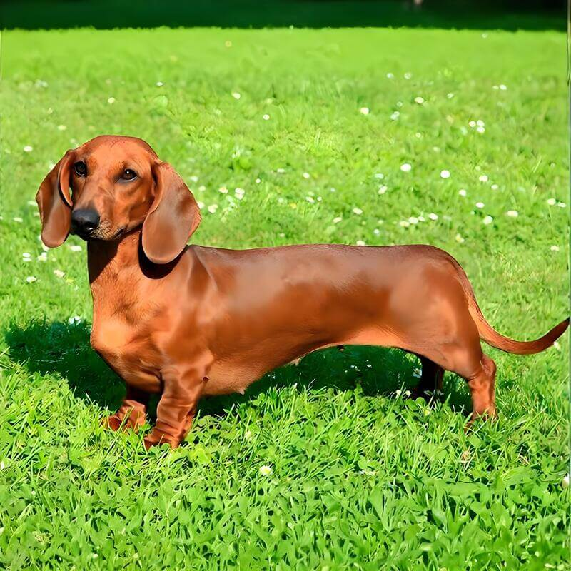
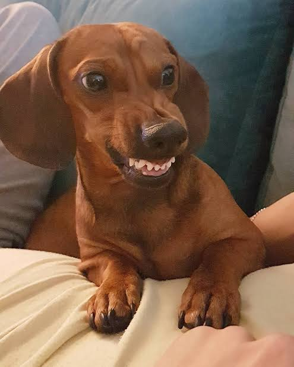
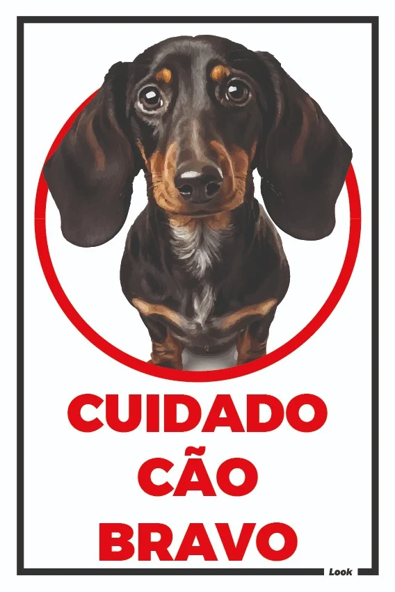
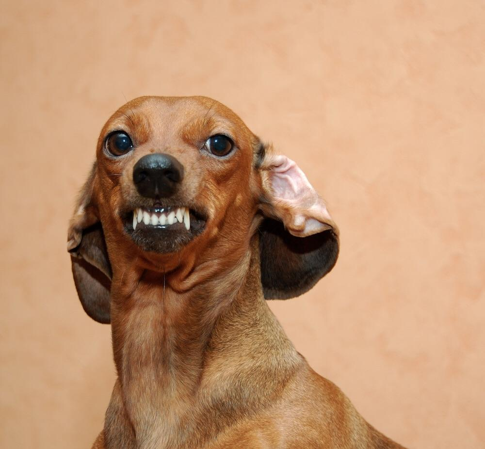
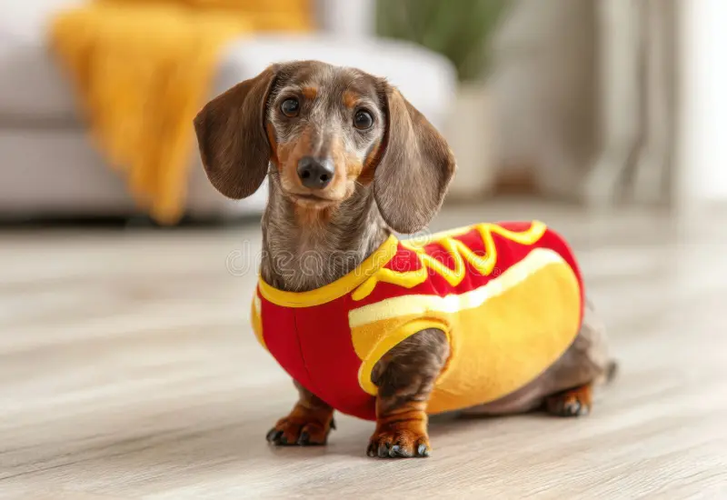
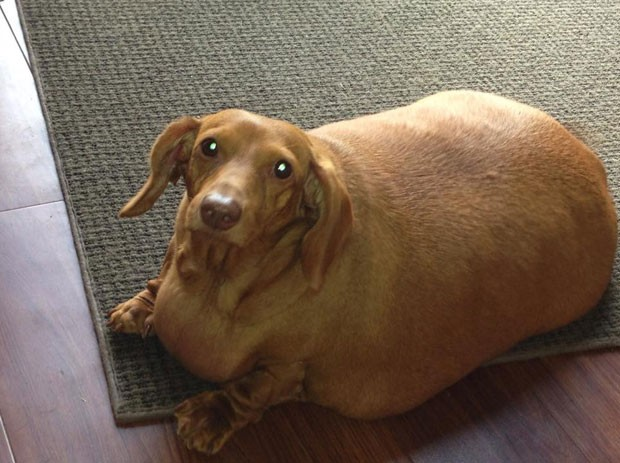
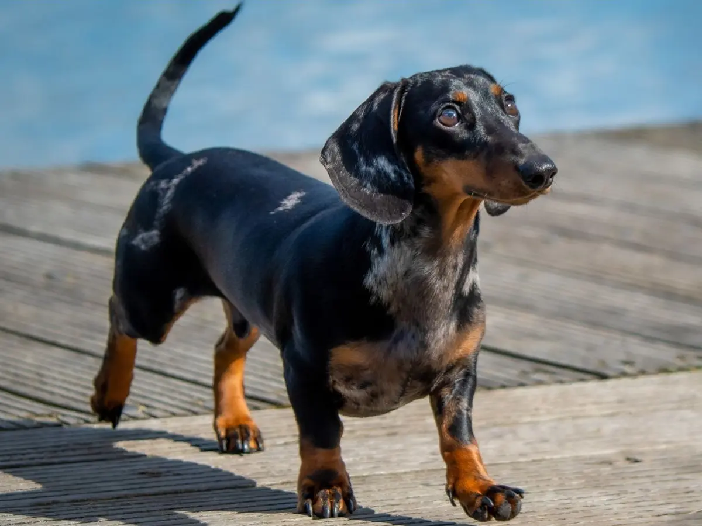

Nossa história
Os cachorros salsicha, também conhecidos como Dachshunds, são uma raça de cães originária da Alemanha. Eles são conhecidos por seu corpo longo e pernas curtas, o que lhes dá uma aparência única e adorável. Esses cães foram originalmente criados para caçar texugos, daí o nome "Dachshund", que significa "cão texugo" em alemão.



Características
Os cachorros salsicha são conhecidos por sua personalidade amigável e leal. Eles são inteligentes, curiosos e podem ser bastante teimosos às vezes. Apesar de seu tamanho pequeno, eles têm uma grande quantidade de energia e precisam de exercícios regulares para se manterem saudáveis e felizes.



Cuidados
Para cuidar de um cachorro salsicha, é importante fornecer uma dieta equilibrada, exercícios regulares e visitas ao veterinário para check-ups. Além disso, devido à sua estrutura corporal única, eles podem ser propensos a problemas nas costas, então é importante evitar que subam escadas ou saltem de móveis altos.


